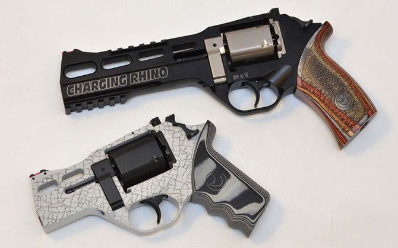

Первый револьвер Chiappa Rhino был разработан и произведён в 2009 году. Конструкторами револьверов Chiappa Rhino являлись довольно популярные итальянские конструкторы Антонио Кудаццо и Эмилио Гизони, создавшие до этого довольно необычный револьвер Mateba Model 6 Unica. Помимо запатентованного и очень необычного дизайна, револьвер имел довольно необычное расположение ствола (казенная часть ствола располагалась напротив нижней каморы барабана) и хитрую систему замыкания барабана с не менее хитрым ударно-спусковым механизмом. В результате получился револьвер с неплохими характеристиками
Рама револьвера Rhino (Носорог) изготавливается из легкого сплава на основе алюминия. Это позволило значительно снизить массу оружия, сведя к минимуму один из наиболее существенных недостатков револьверов. Ствол, барабан и еще ряд деталей оружия производятся из стали. Револьверы Chiappa Rhino выпускаются в нескольких модификациях, включая компактную модель для скрытого ношения 200DS. Среднеразмерные и полноразмерные варианты представлены моделями 40DS, 50DS и 60DS. Они отличаются только длиной ствола, равной 102, 127 и 152 мм, соответственно. Барабаны револьверов Rhino в целях компактности и удобства при скрытом ношении оружия выполнены шестигранными со скругленными краями.
Револьверы Chiappa Rhino 40DS, Chiappa Rhino 50DS и Chiappa Rhino 60DS имеют барабаны емкостью шесть патронов. Барабаны револьверов Rhino в целях компактности, удобства при скрытом ношении оружия и снижения массы револьвера представляют собой шестигранники со скругленными краями. Для экстракции стреляных гильз и перезарядки барабан откидывается влево. Он фиксирующимся в закрытом положении рычагом на левой стороне рамки, который находится рядом с фальш-курком. Ударно-спусковой механизм двойного действия, куркового типа. Выступающий фальш-курок является рычагом взвода курка, размещающегося в нижней части рамы, за нижней каморой барабана.
СвернутьРевольверы Chiappa Rhino производятся в нескольких калибрах, как под револьверные патроны .357 Magnum, так и под пистолетные патроны .40 S&W и 9x21 IMI. Прицельные приспособления состоят из сменной мушки и регулируемого целика. Выпускаются также и хромированные варианты стандартных образцов под наименованием Hard Chrome. Щечки рукоятки выполнены из орехового дерева. Револьверы Chiappa Rhino демонстрирует высокую точность стрельбы. Из них проще стрелять в быстром темпе благодаря небольшой силе отдачи и отсутствию подброса ствола во время выстрела.
Новинкой выставки SHOT Show 2017 предложенной компанией Chiappa Firearms
стал револьвер White Rhino 30DS калибра .357 Magnum, модель для самообороны
с 3-дюймовым стволом, который обеспечивает лучший баланс во время скрытого ношения и позволяет лучше контролировать отдачу таких мощных патронов, как .357 Magnum.
Оружие имеет весьма оригинальную отделку Cerakote с эффектом "кожи носорога" и анатомическими накладками на рукоятку из G10.
Прицельные приспособления имеют вставки зеленого (целик) и красного оптоволокна (мушка).
Другой новинкой стал револьвер "Charging Rhino" с 6-дюймовым стволом, на основе модели 60 DS с оптоволоконными прицельными приспособлениями, с барабаном матовой отделкой из нержавеющей стали и двойной планкой Пикатинни для установки аксессуаров.
Ствол имеет длину 6 дюймов, рукоятка из слоистой древесины представлена разноцветными вариантами.
| Модель | Длина(мм) | Длина ствола(мм) | Масса(гр) |
|---|---|---|---|
| 40DS | 215 | 102 | 850 |
| 50DS | 240 | 127 | 895 |
| 60DS | 266 | 152 | 936 |
Плюсы:
- точность и кучность боя
- слабая отдача
- распространенность боеприпасов.
Недостатки:
- отсутствие предохранителя
- рамка из алюминиевого сплава.
Назовите город, в котором родился Эмилио Гизони:
В массовой культуре револьверы Rhino распространён не так сильно, как пистолеты Glock, Desert Eagle и другие, однако он успел много раз побывать в руках различных персонажей. Револьверы Rhino встречаются в таких играх, как Battlefield 4, Arma 3, Tom Clansy's Rainbow Six Siege, а также присутствуют в таких фильмах, как Отряд Самоубийц, Дивергент, Вспомнить всё и других.
{kind=link}